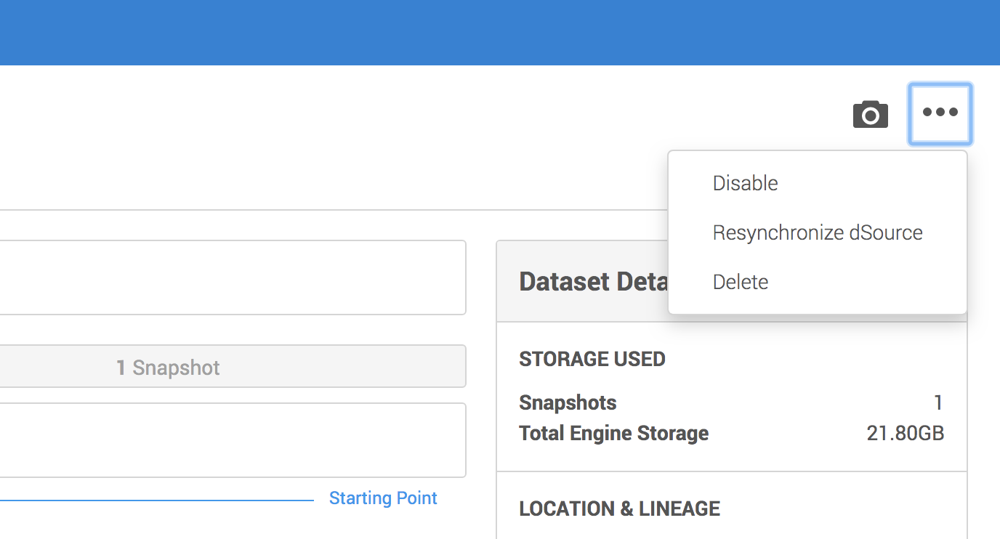
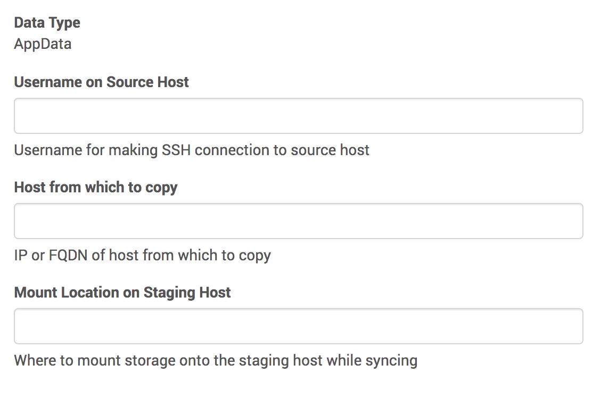

Data Ingestion¶
How Does Delphix Ingest Data?¶
As previously discussed, the Delphix Engine uses the discovery process to learn about datasets that live on a source environment. In this section we will learn how the Delphix Engine uses a two-step process to ingest a dataset.
Linking¶
The first step is called linking. This is simply the creation of a new dataset on the Delphix Engine, which is associated with the dataset on the source environment. This new linked dataset is called a dSource.
Syncing¶
Immediately after linking, the new dSource is synced for the first time. Syncing is a process by which data from the source environment is copied onto the Delphix Engine. Subsequent syncs may then be periodically performed in order to keep the dSource up-to-date.
The details of how this is done varies significantly from plugin to plugin. For example, some plugins will simply copy files from the filesystem. Other plugins might contact a DBMS and instruct it to send backup or replication streams. There are many possibilities here, but they all break down into two main strategies that the plugin author can choose from: direct and staging.
With the direct strategy, the plugin is not in charge of the data copying. Instead the Delphix Engine directly pulls raw data from the source environment. The plugin merely provides the location of the data. This is a very simple strategy, and is also quite limiting.
For our first plugin, we will be using the more flexible staging strategy. With this strategy, the Delphix Engine uses NFS for Unix environments (or iSCSI on Windows environments) to mount storage onto a staging environment. Our plugin will then be in full control of how to get data from the source environment onto this storage mount.
With the staging strategy, there are two types of syncs: sync and resync. A sync is used to ingest incremental changes while a resync is used to re-ingest all the data for the dSource. For databases, this could mean re-ingesting from a full database backup to reset the dSource. A sync and a resync will execute the same plugin operations. To differentiate a sync from a resync, simply add a boolean property (i.e. resync) in the plugin's snapshot parameters definition. Once sync or resync is selected, the property will be passed into linked.pre_snapshot and linked.post_snapshot as a snapshot parameter.
A regular sync is the default and is executed as part of policy driven syncs. A resync is only executed during initial ingestion or if the Delphix user manually starts one. The customer can manually trigger a resync via the UI by selecting the dSource, going to more options and selecting Resynchronize dSource. 
Gotcha
Although it is not common, it is entirely possible that the staging environment is the same as the source environment. Be careful not to assume otherwise in your plugins.
Our Syncing Strategy¶
For our purposes here in this intro plugin, we will use a simple strategy. We won't do anything with the resync snapshot parameter and simply copy files from the filesystem on the source environment onto the NFS mount on the staging environment. We will do this by running the Unix tool rsync from our staging environment, and rely on passwordless SSH to connect to the source environment.
Info
This plugin is assuming that rsync is installed on the staging host, and that the staging
host user is able to SSH into the source host without having to type in a password. A more
full-featured plugin would test these assumptions, usually as part of discovery.
In the special case mentioned above, where the staging environment is the same as the source environment, we could likely do something more efficient. However, for simplicity's sake, we won't do that here.
Defining Your Linked Source Data Format¶
In order to be able to successfully do the copying required, plugins might need to get some information from the end-user of your plugin. In our case, we need to tell rsync how to access the files. This means we need to know the source environment's IP address (or domain name), the username we need to connect as, and finally the location where the files live.
Again, we will be using a JSON schema to define the data format. The user will be presented with a UI that lets them provide all the information our schema specifies.
Open up schema.json in your editor/IDE. Locate the LinkedSourceDefinition and replace it with the following schema:
"linkedSourceDefinition": {
"type": "object",
"additionalProperties": false,
"required": ["sourceAddress", "username", "mountLocation"],
"properties": {
"sourceAddress": {
"type": "string",
"prettyName": "Host from which to copy",
"description": "IP or FQDN of host from which to copy"
},
"username": {
"type": "string",
"prettyName": "Username on Source Host",
"description": "Username for making SSH connection to source host"
},
"mountLocation": {
"type": "string",
"format": "unixpath",
"prettyName": "Mount Location on Staging Host",
"description": "Where to mount storage onto the staging host while syncing"
}
}
},
Info
As will be explained later, this schema will be used to generate Python code.
All names in the autogenerated Python code will use lower_case_with_underscores as attribute names as per Python variable naming conventions.
That is, if we were to use mountLocation as the schema property name, it would be called
mount_location in the generated Python code.
With this schema, the user will be required to provide the source username, the source's IP address, and the staging mount location as part of the linking process.
Implementing Syncing in Your Plugin¶
There are three things we must do to implement syncing. First, we need to tell the Delphix Engine where to mount storage onto the staging environment. Next we need to actually do the work of copying data onto that mounted storage. Finally, we need to generate any snapshot-related data.
Mount Specification¶
Before syncing can begin, the Delphix Engine needs to mount some storage onto the staging host. Since different plugins can have different requirements about where exactly this mount lives, it is up to the plugin to specify this location. As mentioned above, our simple plugin will get this location from the user.
Open up the plugin_runner.py file and find the linked_mount_specification function (which was generated by dvp init). Replace it with the following code:
@plugin.linked.mount_specification()
def linked_mount_specification(staged_source, repository):
mount_location = staged_source.parameters.mount_location
mount = Mount(staged_source.staged_connection.environment, mount_location)
return MountSpecification([mount])
Let's take this line-by-line to see what's going on here.
@plugin.linked.mount_specification()
This decorator announces that the following function
is the code that handles the mount_specification operation. This is what allows the Delphix
Engine to know which function to call when it's time to learn where to mount. Every operation
definition will begin with a similar decorator.
def linked_mount_specification(staged_source, repository):
This begins a Python function definition. We chose to call it linked_mount_specification, but we
could have chosen any name at all. This function accepts two arguments, one giving information about
the linked source, and one giving information about the associated repository.
mount_location = staged_source.parameters.mount_location
The staged_source input argument contains an attribute called parameters. This in turn contains
all of the properties defined by the linkedSourceDefinition schema. So, in our case, that means
it will contain attributes called source_address, username, and mount_location. Note how any attribute defined in camelCase in the schema is converted to variable_with_underscores. This line
simply retrieves the user-provided mount location and saves it in a local variable.
mount = Mount(staged_source.staged_connection.environment, mount_location)
This line constructs a new object from the Mount class. This class holds details about how Delphix Engine storage is mounted onto remote environments. Here, we create a mount object that says to mount onto the staging environment, at the location specified by the user.
return MountSpecification([mount])
On the line just before this one, we created an object that describes a single mount. Now, we must return a full mount specification. In general, a mount specification is a collection of mounts. But, in our case, we just have one single mount. Therefore, we use an array with only one item it in -- namely, the one single mount object we created just above.
Data Copying¶
As explained here, the Delphix Engine will always run the plugin's preSnapshot operation just before taking a snapshot of the dsource. That means our preSnapshot operation has to get the NFS share into the desired state. For us, that means that's the time to do our data copy.
Unlike the previous operations we've seen so far, the pre-snapshot operation will not be autogenerated by dvp init.
So, we will need to add one ourselves. Open up the plugin_runner.py file.
First, we'll add a new import line near the top of the file, so that we can use Delphix's platform libraries and raise user visible errors (explained below).
from dlpx.virtualization import libs
from dlpx.virtualization.platform.exceptions import UserError
Next, we'll add a new function:
@plugin.linked.pre_snapshot()
def copy_data_from_source(staged_source, repository, source_config, optional_snapshot_parameters):
stage_mount_path = staged_source.mount.mount_path
data_location = "{}@{}:{}".format(staged_source.parameters.username,
staged_source.parameters.source_address,
source_config.path)
rsync_command = "rsync -r {} {}".format(data_location, stage_mount_path)
result = libs.run_bash(staged_source.staged_connection, rsync_command)
if result.exit_code != 0:
raise UserError(
"Could not copy files.",
"Ensure that passwordless SSH works for {}.".format(staged_source.parameters.source_address),
result.stderr)
Let's walk through this function and see what's going on
stage_mount_path = staged_source.mount.mount_path
The staged_source argument contains information about the current mount location. Here we save that
to a local variable for convenience.
data_location = "{}@{}:{}".format(staged_source.parameters.username,
staged_source.parameters.source_address,
source_config.path)
This code creates a Python string that represents the location of the data that we want to ingest.
This is in the form <user>@<host>:<path>. For example jdoe@sourcehost.mycompany.com:/bin. As
before with mountLocation, we have defined our schemas such that these three pieces of information
were provided by the user. Here we're just putting them into a format that rsync will understand.
rsync_command = "rsync -r {} {}".format(data_location, stage_mount_path)
This line is the actual Bash command that we'll be running on the staging host. This will look something like rsync -r user@host:/source/path /staging/mount/path.
result = libs.run_bash(staged_source.staged_connection, rsync_command)
This is an example of a platform library function, where we ask the Virtualization Platform
to do some work on our behalf. In this case, we're asking the platform to run our Bash command on the
staging environment. For full details on the run_bash platform library function and others, see this reference.
if result.exit_code != 0:
raise UserError(
"Could not copy files.",
"Ensure that passwordless SSH works for {}.".format(staged_source.parameters.source_address),
result.stderr)
Finally, we check to see if our Bash command actually worked okay. If not, we raise an error message, and describe one possible problem for the user to investigate. For more details on raising user visible errors, see this reference.
Saving Snapshot Data¶
Whenever the Delphix Engine takes a snapshot of a dSource or VDB, the plugin has the chance to save any information it likes alongside that snapshot. Later, if the snapshot is ever used to provision a new VDB, the plugin can use the previously-saved information to help get the new VDB ready for use.
The format of this data is controlled by the plugin's snapshotDefinition schema. In our case, we
don't have any data we need to save. So, there's not much to do here. We will not modify the blank
schema that was created by dvp init.
We do still need to provide python function for the engine to call, but we don't have to do much.
In fact, the default implementation that was generated by dvp init will work just fine for our purposes:
@plugin.linked.post_snapshot()
def linked_post_snapshot(staged_source,
repository,
source_config,
optional_snapshot_parameters):
return SnapshotDefinition()
The only thing this code is doing is creating a new object using our (empty) snapshot definition, and returning that new empty object.
How to Link and Sync in the Delphix Engine¶
Let's try it out and make sure this works!
Prerequisites
-
You should already have a repository and source config set up from the previous page.
-
You can optionally set up a new staging environment. Or, you can simply re-use your source environment for staging.
Procedure
Note
Recall that, for simplicity's sake, this plugin requires that passwordless SSH is set up between your staging and source environments. You may want to verify this before continuing.
-
As before, use
dvp buildanddvp uploadto get your latest plugin changes installed onto the Delphix Engine. -
Go to Manage > Environments, select your source environment, and then go to the Databases tab. Find Repository for our First Plugin, and your source config underneath it.
-
From your source config click Add dSource. This will begin the linking process. The first screen you see should ask for the properties that you recently added to your
linkedSourceDefinition.  -
Walk through the remainder of the screens and hit Submit. This will kick off the initial link and first sync.
-
You can confirm that your new dSource was added successfully by going to Manage > Datasets.
After you have finished entering this information, the initial sync process will begin. This is what will call your pre-snapshot operation, thus copying data.
Gotcha
Manually creating a dSource sets your plugin’s linked source schema in stone, and you will have to recreate the dSource in order to modify your schema. We will cover how to deal with this correctly later, in the upgrade section. For now, if you need to change your plugin's linked source schema, you will have to first delete any dSources you have manually added.